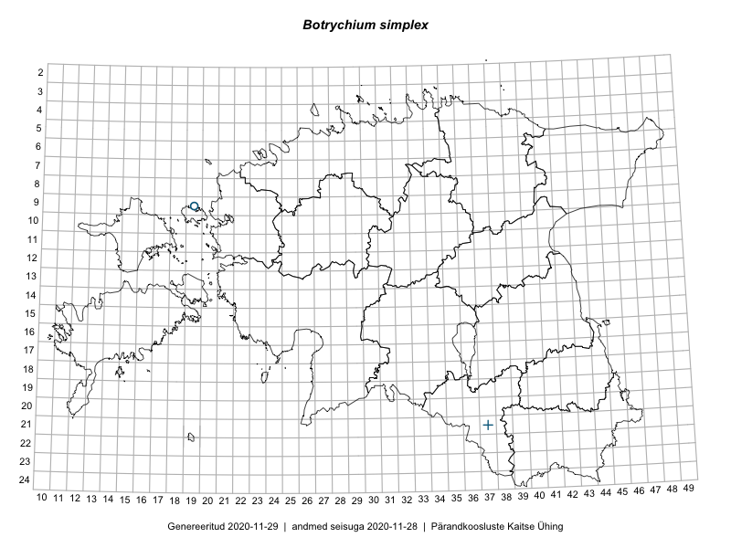

Botrychium simplex — liht-võtmehein
Uuendatud: 2018-01-19
NB! Selle taksoni kohta pole uue taimeatlase andmekogus veel kirjeid.

Andmed “Eesti taimede levikuatlasest”,1 sulgudes ruutude arv:2
● 1971–2005 (0)
○ 1921–1970 (0)
∆ kuni 1920 (1)
+ hävinud (1)
? kaheldav (0)
Kukk, T., Kull, T., Eesti taimede levikuatlas. Eesti Maaülikool, Põllumajandus- ja Keskkonnainstituut, Tartu, 2005.↩
NB! 2005. aasta atlase andmestikus katavad uuemad leiud vanemaid. Näiteks kui liik on ruudus registreeritud 1971–2005, siis pole võimalik öelda, kas ta oli sellest ruudust teada ka enne 1970. aastat. Vana atlase andmetel hävinud ja kaheldavaid leiukohti pole hilisemate (taas)leidude põhjal korrigeeritud.↩